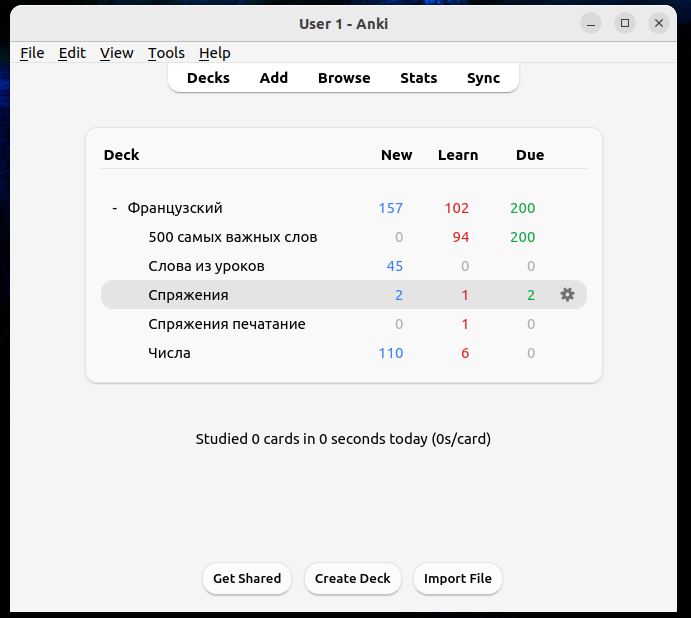

Anki-sync-server
 项目首页
项目首页 针对 Anki 的一个开源同步服务器，允许你在自己的服务器上管理并同步你的学习资料，确保数据隐私和掌控权。

 如何部署在线 Anki-sync-server
如何部署在线 Anki-sync-server
什么是 Anki-sync-server
- Anki Sync Server 是一个开源项目，旨在提供一个个人化的 Anki 同步服务器，使用户能够替代 AnkiWeb 进行同步。该项目主要使用 Python 编程语言开发，适合有一定 Python 编程基础的用户进行部署和定制。
功能列表
- 个人化同步服务：允许用户在自己的服务器上运行 Anki 同步服务，替代 AnkiWeb，确保数据隐私和安全。
- RESTful API：提供了一个 RESTful API，用户可以通过该 API 实现类似于 AnkiWeb 的功能，甚至可以开发自己的 Anki 同步网站。
- 兼容性：支持与 Anki 桌面应用程序、Android 和 iOS 移动应用程序的同步，确保用户在不同设备间的数据一致性。